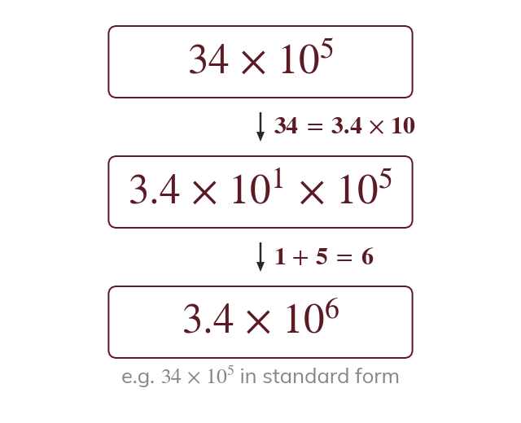

A between and
A number like is not in standard form. Its first part must lie between and
A number such as has the right value but is not in standard form, because is not less than
Rewriting it moves the point in A and changes the power to keep the value.
Rewriting it moves the point in A and changes the power to keep the value.